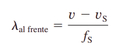

Efecto Doppler I: Fuente en movimiento emitiendo
El Efecto Doppler es una alteración de la frecuencia observada de un
sonido debido al movimiento de la fuente o del observador. Aunque es
menos conocido, este efecto es fácilmente perceptible para una
fuente estacionaria y un observador en movimiento.
Por ejemplo, si pasa por delante de un tren con una bocina de
advertencia estacionaria, oirá que la frecuencia de la bocina cambia
de alta a baja cuando usted pasa.
El cambio real en la frecuencia debido al movimiento relativo de la
fuente y el observador se denomina corrimiento Doppler. El Efecto
Doppler y el corrimiento Doppler deben su nombre al físico y
matemático austriaco Christian Johann Doppler (1803-1853), quien
hizo experimentos con fuentes y observadores en movimiento. Doppler,
por ejemplo, hizo que los músicos tocaran en un vagón de tren
abierto en movimiento y que también lo hicieran parados junto a las
vías del tren mientras este pasaba. Se observó su música tanto
dentro como fuera del tren, y se midieron los cambios de frecuencia.


- f(s) : es la frecuencia producida por la fuente en movimiento, Su unidad de medida en el Sistema Internacional (S.I.) es el hertzio (Hz).
- v : Velocidad de propagación de la onda en el medio. Es constante y depende de las características del medio. Se relaciona con la longitud de onda y la frecuencia según v=λ·f. Su unidad de medida en el S.I. es el metro por segundo (m/s)
- v(s): es la velocidad constante de la fuente, el signo superior es para la fuente que se acerca al observador y el signo inferior es para la fuente que se aleja del observador, en el S.I. es el m/s
Calculadora Efecto doppler I
Ejemplo Efecto doppler I
Una sirena policiaca emite una onda senoidal con frecuencia fS 5 300
Hz. La rapidez del sonido es de 340 m>s. a. Calcule la longitud de onda del sonido
si la sirena está en reposo en el aire.
b. Si la sirena se mueve a 30 m>s (108 km>h, o bien, 67 mi>h),
calcule las longitudes de onda para las ondas adelante y atrás de la fuente
IDENTIFICAR:
- El efecto Doppler no interviene en el inciso a), ya que ni la fuente ni el receptor están en movimiento. En el inciso b), la fuente está en movimiento, así que deberemos considerar el efecto Doppler. PLANTEAR:
- La figura 16.29 muestra la situación. Usamos la relación v 5 lf para determinar la longitud de onda cuando la sirena está en reposo. Cuando está en movimiento, obtenemos la longitud de onda a cada lado de la sirena usando las ecuaciones (16.27) y (16.28). EJECUTAR:
-
a. Cuando la fuente está en reposo:
-
b. delante de la sirena
Por la ecuación
Por la ecuacion detrás de la sirena
EVALUAR: La longitud de onda es menor delante de la sirena y mayor detrás de ella, como debe ser.